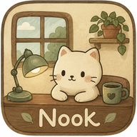

A cozy little weather companion
Nook is a personal web app: a small isometric room with a character that reacts to the real weather outside, a simple to-do list, and an optional, read-only connection to Google Calendar so it can show you today's schedule.
If you choose to connect it, Nook reads your Google Calendar to show today's events in the app and let its character know when something is coming up soon. Nook never creates, edits, or deletes anything on your calendar, and connecting is entirely optional — everything else about Nook works without it. You can disconnect at any time from Nook's Settings.